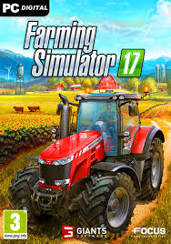

ABOUT THIS GAME
Take on the role of a modern farmer in Farming Simulator 17! Immerse yourself in a huge open world loaded with new content: new environment, vehicles, animals, crops and gameplay mechanics!
Explore farming possibilities over hundreds of acres of land, including a detailed new North American environment. Drive over 250 authentic farming vehicles and equipment from over 75 manufacturers, including new brands such as Challenger, Fendt, Valtra or Massey Ferguson.
SYSTEM REQUIREMENTS
OS: Windows 7, Windows 8, Windows 10
Processor: 2.0 GHz Intel or equivalent AMD dual-core processor
Memory: 2 GB RAM
Graphics: Nvidia Geforce GTS 450 Series, AMD Radeon HD 6770 graphics card or better (min 1GB VRAM)
Network: Broadband Internet connection
Storage: 6 GB available space